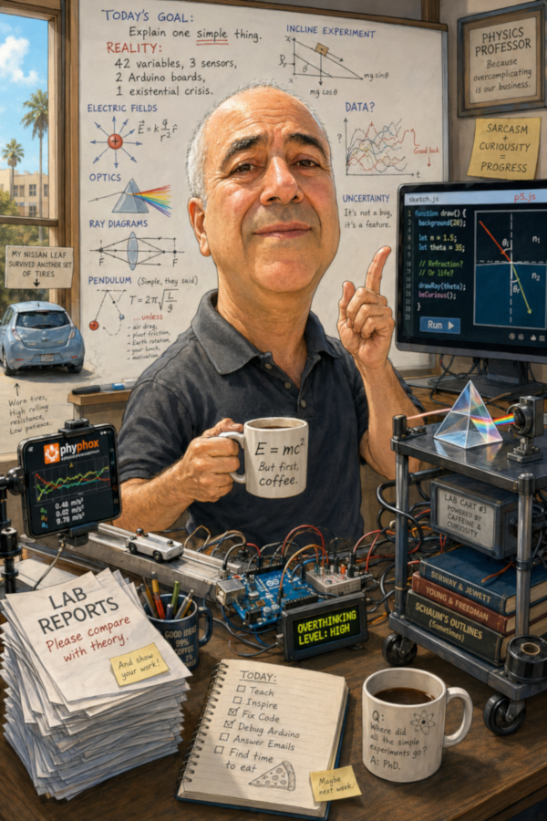

A note about the physics: These SIMs are intended primarily for introductory physics education. As a result, many of them use simplified models, idealizations, or approximations to emphasize fundamental physical principles without introducing unnecessary complexity. They should therefore be viewed as a gateway to understanding the underlying physics rather than as complete or comprehensive models of the phenomena they represent. Learners who are interested in a topic are encouraged to explore it further through more advanced study.
These SIMs are inspired by the outstanding work of many people who have developed interactive science simulations. They are being developed with assistance from Anthropic's Claude AI.
MyOpenMath.org (MOM) versions of these SIMs are also available there.
The list currently includes items that are highlighted as reminders for me of SIMs in MyOpenMath that I am working on porting here, as well as ideas for new SIMs.
My work on these SIMs is inspired by the outstanding work of many people who have developed interactive science simulations. Everything posted here has benefited from enhancements made with the assistance of Anthropic's Claude AI. Some of the simulations were originally developed by me, either recently or many years ago. In those cases, AI was used primarily to add accessibility features and to clean up or streamline the code.
Other simulations were developed from scratch with AI tasked with much of the coding, although I occasionally had to modify or correct the resulting code. Still others were developed by providing AI with example simulations, including some from the resources listed below, and describing what I hoped to accomplish with the new simulation.
Two PDFs provide examples of the AI-assisted development process: development of the Mirage SIM and development of the Thin Film: Wedge & Newton's Rings SIM. I use the Pro subscription version of Claude. The "Continue" statements in the PDFs indicate interruptions that occurred when the plan's usage limits were reached.
The simulations illustrated in those development examples are Mirage and Thin Film: Wedge & Newton's Rings.
I would especially like to acknowledge my colleague and mentor, Professor John Foley from Mississippi State University. We worked together on developing WebTOP, which included simulations covering waves and optics. If time allows, I may try to revive some of that work with the assistance of AI.
I would also like to acknowledge Professor Gerry Meisner from the University of North Carolina at Greensboro, with whom I worked for a time. Gerry helped me appreciate the importance of ensuring that simulations do not expose learners only to simple, idealized conditions.
Here are some of the sites and resources that have inspired me the most:
To learn a little more about me, .

While pursuing this project, I often feel like a Jack of All Trades and Master of None. I appreciate the opportunity.